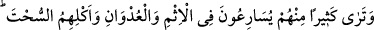

Devlet sahibi olanların gönüllerine perde vuramaz
62. Onlardan çoğunun günah, düşmanlık ve haram yemede yarıştıklarını
görürsün. Yaptıkları ne kadar kötüdür!
Ey Muhammed! Kendi gözlerinle “onlardan” Yahûdî ve münâfıklardan “çoğunun
günah, düşmanlık ve haram yemede yarıştıklarını görürsün.” Âyetteki “ism” mutlak
olarak yalan demektir. Günahta yarıştıklarının ifade edilmesi, onların bu huylarında
devamlı olduklarına delalet eder.
Onların yarışmaları, zikredilen şeylerin bir mertebesinden diğerine doğrudur. Nitekim
“İşte onlar, iyiliklerde yarışırlar.” (Mü’minûn, 23/61) âyetinde de benzer bir durum
söz konusudur. Yani onlar “Rabbinizin bağışına ve takvâ sahipleri için hazırlanmış
olup genişliği gökler ve yer kadar olan cennete koşun.” (Âl-i İmran, 3/133) âyetinde
açıklandığı gibi hayrın dışında bulunuyorlar da ona yönelip koşuşuyor değildirler.
Düşmanlık, başkasının hakkına tecâvüz ederek yapılan zulümdür.
“Yaptıkları ne kadar kötüdür!” Bu cümlede hem geçmiş zamanın, hem de geniş
zamanın birlikte kullanılması, onların bunu yapmaya devam edeceklerine delalet eder.
63. Rabbânîler ve hahamların, onları günah söz söylemekten ve haram yemekten
menetmeleri gerekmez miydi? İşledikleri ne kadar kötüdür!
Rabbânîler ve hahamlar, İsrâiloğullarının âlimleridir. Ancak, rabbânî, Hakk’a vâsıl
olmuş ârif zahid kişidir. Çoğulu “__WORD__” olan ve hahamlar diye mana verilen “__WORD__” ise
ilmi ile amel eden makbul âlim demektir.
“Rabbânîler ve hahamların onları”; yani mü’min olmadıkları halde “îman ettik”
diyerek “günah söz söylemekten ve” çirkin olduğunu bildikleri ve gördükleri halde
“haram yemekten menetmeleri gerekmez miydi?”
“İşledikleri ne kadar kötüdür!” Bu ifade, önceki âyetin sonundaki “Yaptıkları ne
kadar kötüdür.” ifadesinden daha ağırdır. Çünkü önceki âyetteki ifade “__WORD__ ” kökünden
gelmektedir. Burada ise san’at kelimesinin de aslı olan “__WORD__” kökünden gelmektedir.
San’at ise normal bir amelden daha güçlü bir fiildir. Çünkü, bir amel ancak iyice
yerleşip kökleşince san’at adını alır. Günah işleyen, düşmanlık yapan ve haram